Senior graphic designer · since 2018
Ali Alhusam
Brand identity, campaigns, exhibition booths and AI-driven visuals for government entities and leading enterprises. Every project starts as a sketch.
See the work.
38 projects: campaigns, event themes, exhibition booths, presentations and social content, each with its brief and, where it applies, the steps from sketch to final.
From sketch to final
A rough sketch first, then references, AI scenes or a 3D model, and a finished design. Every image is directed, chosen and finished by hand.


The Alojour booth, from a notebook sketch to the final render. See the project
Sketch
Pen and paper
Every project starts as a rough sketch: the composition and the message before any tool.
Reference
Magnific Spaces
Location, light, people and cultural detail gathered as one board.
Generate or model
Magnific, Nano Banana Pro, Blender
Scenes directed side by side on one canvas; booths built in Blender from outline to placed models.
Refine
Photoshop, Higgsfield, Flow
Upscaling, retouching and compositing, then key frames turned into motion.
Design and render
Adobe Creative Cloud, Blender
Typography, layout and final renders for every format and screen.
- Ideas and concept
- Pen and paper, Claude, ChatGPTA rough sketch first, then the brief analysed and the idea, copy direction and prompts built.
- Image
- Magnific, PhotoshopScenes generated in Magnific Spaces with Nano Banana Pro, upscaled, then retouched and composited in Photoshop.
- 3D and video
- Blender, Higgsfield, FlowExhibition booths modelled and rendered in Blender; key frames turned into motion.
- Design and delivery
- Adobe Creative CloudIllustrator, InDesign, Photoshop, After Effects and Premiere Pro for identity, layout, motion and final files.
About
I design identities, campaigns, presentations and exhibition booths for government entities and leading enterprises in Saudi Arabia. Each idea starts on paper; AI and 3D then help the visuals arrive faster without losing control of the brand.
Designing since2018
